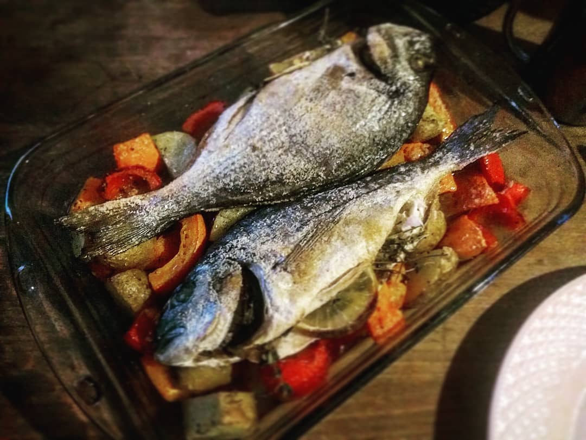

Pečená ryba podľa @lazycook_cz — Normy Jedál
A ješte včerejší pražma zlatá, pečená naplněná citronem a čerstvou majoránkou na lůžku z brambor, dýně a červené papriky 🐟🍋🌿🥔🎃🌶. Skvělá kombinace 😋🖤!
#prazmazlata #ryba #mamerybu #vecere #cerstvamajoranka #citron #zeleninoveluzko #brambory #dyne #paprika #dinner #fish #giltheadbream #wehavefish #fishfordinner #freshmarjory #lemon #vegetablebed #roastedveg #roastedfish #potatoes #squash #redpepper #pecenaryba #sezeleninou #withvegetables